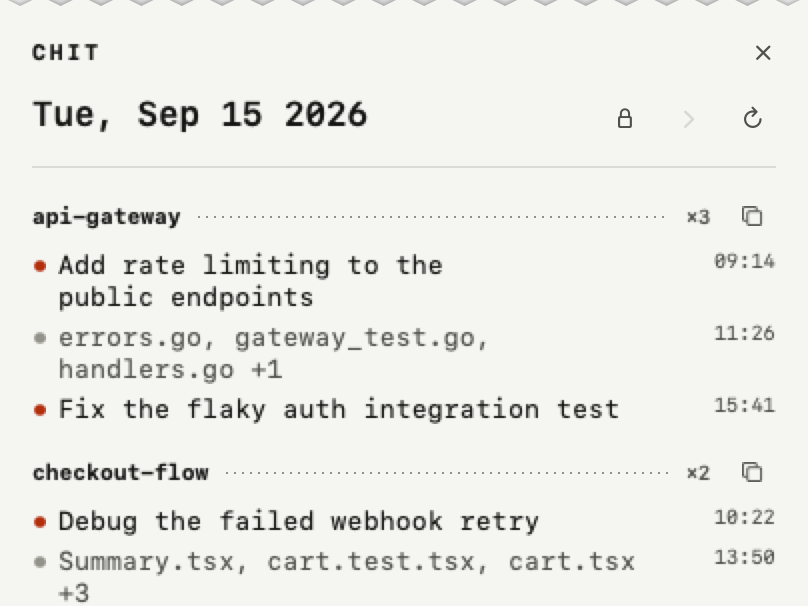

Jodhpur,
Rajasthan.
I’m a designer and AI engineer.
I build brands, and the
apps they live inside.
Jodhpur,
Rajasthan.
I’m a designer and AI engineer.
I build brands, and the
apps they live inside.
the only thing
that empties
my head.
Mac apps I designed, engineered and shipped on Product Hunt in seven weeks, built with Claude Code.

#3
Product of the day
Sep 26, 2026
A printed receipt of your day in Claude Code.
Parses the session transcripts Claude Code writes to disk and prints what you shipped, grouped by project and ready to paste.
226 points · #26 of the week
#7
Product of the day
Aug 7, 2026
A tiny crew of monsters for your Claude Code agents.
Listens to Claude Code hook events and gives every running chat and subagent its own pixel monster along the bottom of your screen.
141 points · #45 of the week
#8
Product of the day
Sep 1, 2026
A little creature that lives in your MacBook notch.
Follows your cursor, dozes when you go idle, and carries any file you drop into its mouth. Live weather, drawn frame by frame.
138 points · #53 of the week · PH newsletter
How they get built
The launches are the output. The system behind them is the real work.
/rav is a Claude Code skill with a core spec and eight reference playbooks for layout, motion, color and copy. It carries my taste into every build, this page included.
Crew wires Claude Code's UserPromptSubmit, Stop, PreToolUse and SubagentStop events into one shell script, so every chat and subagent appears the moment it starts.
Notchling's weather scenes went through an eight-agent panel: one subagent per screenshot plus a coherence judge, scoring against a written brief before release.
Chit and my daily worklog read Claude Code's own session transcripts, so the record of what I shipped writes itself every evening.
Twelve shown. Forty more in the archive, 2018 to 2026.
More work
Inbox open. Reply within 24 hours, most days. Slower on Sundays. That’s a feature.